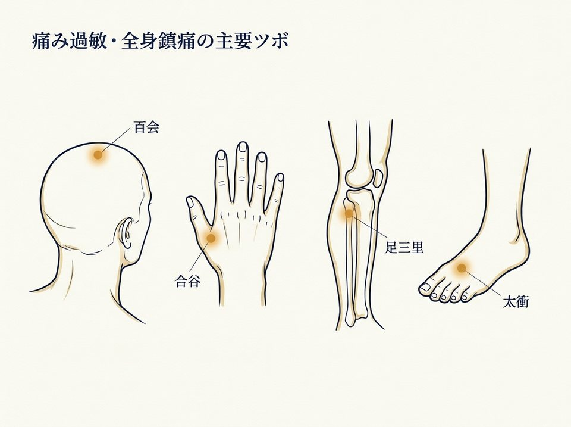

後頭神経痛の鍼灸
後頭部や耳の後ろに電撃のような痛みが走る後頭神経痛に対し、神経を圧迫する首肩の深層筋を的確に緩めて改善へ導きます。


院長YouTube解説・関連動画
頭が凝ってて目があきにくいEさんのケース
頭が凝ってて目があきにくい。側頭部と眉の付け根、右側の首の付け根が痛い。鍼には結構いっていて2〜3ヶ月前にも鍼をした。
・来院のきっかけ
娘からインスタにすごい先生が載っていると教えてもらったことがきっかけ。20歳の頃に交通事故に遭い、その後後遺症で鞭打ちが出て、気圧の変化ですぐ症状が出ていたところを娘に教えてもらった。
・他の鍼灸院と当院の違い
今日の施術を経験して他の先生は細い鍼だったかもと感じた。鍼が太かったのか局部にグッとくる感じがあってスッキリした。院長の人柄はクールな先生で少し緊張したが施術はしっかりやってもらえた。
悪いところが頭蓋骨と背骨の内側にあるため、そこに直接鍼を入れる施術を行った。頭蓋骨と背骨の内側は頭の方とも連動しているため頭や眉の付け根の痛みもそこからきている。
今までの鍼では狙っていたポイントが表面だけだと思われるため、悪いところをしっかり狙うと落ち着くと見ています。
今までは悪いところに直接そこまで入れていないかもしれません。今回はそこに入れるような施術を行いました。
🎥 他のYouTube切り抜き・解説を読む（あと1件）▼
慢性的な頭痛で吐き気まで現れるSさん
天候や仕事が忙しくなると慢性的な頭痛が起きる。目の奥に感じる。頭痛で吐き気もする。仕事がずっとパソコンで毎日辛い。辛い時は自分で首をぼきぼきしてしまう。
・きっかけ
インスタで知った。もともとマッサージより鍼の方が好きだったがより奥に行っている感じ絵をインスタで見て気になっていた。
首ばかりに意識がいっていたが、腰が悪いと言われて実際に鍼をしてもらったらズンがすごくてびっくりした。
・先生の印象
口調が優しくて、鍼も場所によって痛みを感じることもあるがなく、直接筋肉の奥に行っている感じがした。細かく気にかけてくれる感じが優しい方だと思った。
症状は腰からきていると思われます。そのため、腰が改善すれば落ち着きます。ただし、自分でぼきぼきしたことで背骨がずれてしまい、右に倒すと右の背中が痛くなるという肩甲背神経障害という神経痛を発症しているため、ぼきぼきはやめた方が良いです。倒しても響かなくなればスムーズに改善します。
首はそんなに悪くないですが骨がずれてしまっているため、そこと腰を施術していきます。腰がおかしいという情報が脳に伝わって脳が興奮して首が痛くなっている状態のため、腰を中心に施術を行いました。
おすすめ記事
▼ 詳しく知りたい項目だけタップして開けます（全項目の医学解説を収録）
01. 原因とメカニズム
なぜ症状が起きるのか・鍼灸の作用機序を読む
▼
01. 原因とメカニズム
なぜ症状が起きるのか・鍼灸の作用機序を読む
後頭神経痛は、後頭部や耳の後ろの皮膚感覚を司る大後頭神経・小後頭神経・大耳介神経などが圧迫・刺激されることで発症する神経痛です。長時間のパソコン作業や猫背などの不良姿勢、頸椎の変性、むち打ち等の外傷、精神的ストレスにより首や肩の深層筋が硬くなると、筋肉の間を通る神経が締めつけられて鋭い痛みが生じます。また、腰背部のゆがみを首でかばう姿勢の崩れや、自分で首をポキポキ鳴らす習慣が悪化要因になることもあります。
なぜ鍼灸で改善へ向かうのか？（作用機序の図解）
後頭神経痛に対する鍼灸は、脳循環・三叉神経血管系と神経可塑性の調整機序を通じて、お体本来の回復力を引き出します。
百会・風池・合谷などの経穴刺激が三叉神経や大後頭神経・体性感覚路へ穏やかに作用します。
脳幹の自律神経中枢やセロトニン・GABA系のバランスを整え、神経の過敏発火を鎮めます。
後頭下筋群や首深部のこわばりを解き、頭部・内耳・顔面周囲の血流環境をサポートします。
神経回路の再学習（可塑性）と睡眠の質を高め、専門医の治療やリハビリの土台を支えます。
02. よくあるお悩み
このような症状はありませんか？（4項目）
▼
02. よくあるお悩み
このような症状はありませんか？（4項目）
- ✓片側の後頭部から頭頂部にかけてピリピリ・電撃のような痛みが走る
- ✓耳の後ろや後頭部を押したり、くしで髪をとかしたりするだけで痛む
- ✓猫背や長時間のデスクワークで首・肩のこりが強い
- ✓頭痛に加えて耳鳴りやめまいを感じることがある
03. 当院の施術アプローチ
施術の進め方・改善のポイントを見る
▼
03. 当院の施術アプローチ
施術の進め方・改善のポイントを見る
04. ツボ詳細・セルフケア一覧
CRPS・末梢神経障害の遠隔・健側アプローチツボ図解（6穴）
▼
04. ツボ詳細・セルフケア一覧
CRPS・末梢神経障害の遠隔・健側アプローチツボ図解（6穴）
実際の施術ではお一人おひとりの体質・症状に合わせて選穴しますが、複合性局所疼痛症候群（CRPS）・神経障害性疼痛の安全な遠隔ケアの臨床でよく用いられる代表的なツボの目安です。
| ツボ名 | 位置の目安 | 主な狙い | セルフケアの注意点 |
|---|---|---|---|
| 外関（がいかん） | 手の甲側、手首から指3本分肘寄り | 上肢の神経過敏・放散痛の遠隔調整 | アロディニア（接触痛）がある患側は避け健側を使います。 |
| 内関（ないかん） | 手のひら側、手首から指3本分肘寄り | 交感神経依存性の痛み・不安感の鎮静 | 強く押し込まず軽く添える程度にします。 |
| 合谷（ごうこく） | 手の甲、親指と人差し指の間 | 中枢性の下行性疼痛抑制系の活性化 | 健側への穏やかな刺激で全体の痛みを和らげます。 |
| 陽陵泉（ようりょうせん） | 膝の外側下、丸い骨の斜め下のくぼみ | 下肢の神経周囲の筋緊張・しびれ感の緩和 | 電撃痛が出ない優しい圧に留めます。 |
| 三陰交（さんいんこう） | 内くるぶしの上から指4本分上 | 末梢の微小循環改善・夜間痛による不眠ケア | 温めと併用すると末梢血流が整いやすくなります。 |
| 太衝（たいしょう） | 足の甲、親指と人差し指の骨の間 | 自律神経の過緊張・足先のピリピリ感調整 | 皮膚感覚が過敏な場合は触れずに遠隔穴を選びます。 |
05. 医学的根拠・国際査読論文（PubMed / Cochrane）
科学的エビデンス・出典リンク一覧（4件）
▼
05. 医学的根拠・国際査読論文（PubMed / Cochrane）
科学的エビデンス・出典リンク一覧（4件）
国際的な医学データベース（PubMed・Cochrane等）で報告されている複合性局所疼痛症候群（CRPS）・神経障害性疼痛の安全な遠隔ケア領域の代表的な査読済み鍼灸研究をまとめています（標準治療との併用や研究上の限界を含めて正確に掲載）。
| 年・研究デザイン | 対象・規模 | 主な結果 | 限界・出典 |
|---|---|---|---|
| 2016年 Cochraneレビュー | 反復性片頭痛 22 RCTs（n=4,985） | 無治療比で頻度半減41% vs 17%（RR 2.40）、予防薬比3か月57% vs 46%（RR 1.24）かつ副作用脱落OR 0.27と優位。 | 1年以上の長期検証は不足。 Cochrane (PMID: 27351677) |
| 2016年 Cochraneレビュー | 脳卒中後リハ 31 RCTs（n=2,257） | 通常リハ併用でBarthel Index（MD 9.19）・Fugl-Meyer（MD 6.16）・嚥下・疼痛改善を示唆、重篤な有害事象なし。 | GRADE低〜非常に低。標準リハビリの補完として位置づけ。 Cochrane (PMID: 27562656) |
| 2024年 シャム対照RCT | パーキンソン病の睡眠障害 78名解析 | 抗PD薬併用下でPDSS睡眠尺度が4週時+19.75点・8週時+20.24点とシャム比有意改善（P<0.001）。 | 単施設・小規模・8週間追跡。標準薬併用が前提。 JAMA Netw Open (PMID: 38922617) |
| 2013年 多施設RCT | ベル麻痺（顔面神経麻痺）338名（ステロイド併用） | 6か月時の顔面神経機能回復は得気手技群が対照鍼群より優位（調整OR 4.16）、QOLも改善。 | 全例プレドニゾン併用。急性期の過剰顔面通電は回避配慮。 CMAJ (PMID: 23439629) |
参考文献・出典
- 2016年 Cochraneレビュー（反復性片頭痛 22 RCTs（n=4,985））— Cochrane (PMID: 27351677)
- 2016年 Cochraneレビュー（脳卒中後リハ 31 RCTs（n=2,257））— Cochrane (PMID: 27562656)
- 2024年 シャム対照RCT（パーキンソン病の睡眠障害 78名解析）— JAMA Netw Open (PMID: 38922617)
- 2013年 多施設RCT（ベル麻痺（顔面神経麻痺）338名（ステロイド併用））— CMAJ (PMID: 23439629)
06. よくある質問（FAQ）
よくあるご質問を見る（2件）
▼
06. よくある質問（FAQ）
よくあるご質問を見る（2件）
Q. 髪の毛に触れるだけで後頭部がヒリヒリ痛みますが、後頭神経痛でしょうか？
神経の走行に沿った圧痛や皮膚の過敏さは後頭神経痛に特徴的ですが、帯状疱疹など別の原因もあるため、発疹や強い違和感が続く場合は医療機関の受診もご検討ください。
Q. 首をポキポキ鳴らすと楽になる気がしますが控えるべきですか？
はい、自分で首を鳴らす行為は関節や周囲の神経・深層筋に強い負担をかけ、後頭神経痛を長引かせる原因になるため控えることをおすすめします。
あわせて読まれる関連疾患（脳神経のお悩み）
脈打つ強い痛みや光・音への過敏を伴う片頭痛に対し、首肩の深層筋と自律神経を整えて発作頻度と負担の軽減を目指します。
頭を動かした瞬間の回転性めまいに対し、首肩の緊張緩和と内耳循環・自律神経調整、寝返り運動で再発予防を支援します。
末梢性顔面神経麻痺に対し、早期の医療機関受診を最優先としたうえで、顔面の血流促進と後遺症予防を支援します。
顔の片側に走る突発的な電撃痛に対し、側頭筋や首肩の深層筋緩和とツボ施術で血流・自律神経を整えます。
自分の体臭や口臭で周囲に迷惑をかけていると過度に悩み続ける状態。精神科・心療内科の専門治療を最優先に、安定期の緊張緩和を支えます。
幻覚や思考の著しい乱れを伴わず固定的な妄想が1か月以上続く精神疾患。精神科での専門治療を最優先に、安定期の不安・不眠ケアを支えます。
CLINICAL RECOVERY CASES
✨ 実際の臨床改善事例・回復経過を見る
銀座本院をはじめ各院での実際の改善事例を症状別に絞り込んでご確認いただけます。
おひとりで悩まず、まずはご相談ください
銀座本院・川口・大宮・横浜・博多・田無の各院でご予約を承っております。